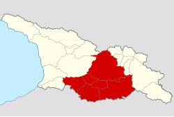

ქართლი

სახელწოდება
სახელწოდება მომდინარეობს ქართველთა ლეგენდარული ეთნარქის — ქართლოსისგან (2116 ქრ. წ.[1]). ლეგენდის თანახმად ქართლოსის მამამ თარგამოსმა გაუყო მის ძეებს კავკასია, ქართლოსს ერგო ტერიტორია სპერის ზღვიდან ხუნანამდე. თავად ქართლოსმა აღაშენა ქალაქი და სახელად დაარქვა მისივე სახელი ქართლი, სადაც მისი გარდაცვალების შემდეგ დაკრძალეს. ქართლოსის სახელი — ქართლელი დაერქვა ქართლში მცხოვრებ ქართლოსის მოდგმის ხალხს, ხოლო მოგვიანებით აღნიშნული სახელის ბაზაზე შეიქმნა სახელი საქართველო და შესაბამისად მის მკვიდრთ ქართველები.
ისტორია
ნიკო ბერძენიშვილის აზრით, ქართლის ტომის თავდაპირველი საცხოვრისი ქვემო ქართლი იყო. ძვ.წ. IV-III საუკუნეებში ქართლის ჰეგემონობით ჩამოყალიბდა ქართლის სამეფო, რომელსაც ბერძნულ წყაროებში იბერიის სამეფოდ მოიხსენიებდნენ. მისი დედაქალაქი ჯერ მცხეთა იყო, შემდეგ თბილისი. X საუკუნეში იგი გაერთიანებული ქართული სახელმწიფოს ცენტრი გახდა და გაჩნდა ტერმინი საქართველო. XV-XVIII საუკუნეებში აქ ჩამოყალიბდა ქართლის სამეფო (მოგვიანებით, ქართლ-კახეთის სამეფო), რომელიც 1801 წელს ანექსირებულ იქნა რუსეთის იმპერიის მიერ.
დაყოფა
ქართლი თავისი ბუნებრივ საზღვრებში მოქცეული წარმოადგენდა ტერიტორიას ხუნანიდან სპერის ზღვამდე და იორ-მტკვრის შესართავიდან ლიხის ქედამდე. აღნიშნული ტერიტორია მალევე ოთხ ნაწილად დაიყო: ზემო ქართლი, შიდა ქართლი (ზენას-სოფლისა), კახეთ-კუხეთი და ქვემო ქართლი. როგორც პოლიტიკურ ერთეულში, სხვა ეთნოგრაფიული მხარეები შედიოდა: ხევი, დვალეთი, ცხრაძმისხევი. ეთნიკურ-გეოგრაფიულად ელინისტური ხანიდან მოყოლებული ქართლი ორ ნაწილად იყოფოდა: ზენა სოფელი და ქვენა სოფელი. სავარაუდოდ ამ ერთეულთა შორის მიჯნა მტკვარზე გადიოდა. მოგვიანებით, ისტორიული ქართლი გეოგრაფიული მდებარეობისა და უმთავრესი მდინარის მტკვრის დინების მიხედვით სამ ნაწილად იყო გაყოფილი:
ზემო ქართლი — ისტორიული მხარე, მოიცავდა შემდეგ რეგიონებს: მტკვრის ზედა დინებას, ტაშისკარიდან დაწყებული მის სათავეებამდე (კოლა, არტაანი, ერუშეთი, თმოგვი, სამცხე, ჯავახეთი და თორი), ასევე ჭოროხის აუზს სრულად (ტაო-კლარჯეთი) და შავი ზღვისპირეთს ჭანეთსა და გურიას. გეოგრაფიულად სრულად აერთიანებდა, ეთნარქების — ოძრხოსისა და ჯავახოსის მიწებს. ტერმინი შეესაბამება გვიანდელი ხანის „მესხეთს“. ზემო ქართლი რომ შავი ზღვისპირამდე ვრცელდებოდა ეს ჩანს, როგორც ქართლის („ხუნანიდან სპერის ზღვამდე“), ისე ოძრხოსის წილის („ტასისკარითგან ვიდრე სპერის ზღუამდე“) და თავად კლარჯეთის („არსიანიდან ზღვამდე“) აღწერიდან. მიუხედავად ამ ყველაფრისა ვახუშტი ბატონიშვილისთვის კლარჯეთი ეს იყო ქართლისაგან დამოუკიდებელი წარმონაქმნი და მასში აერთიანებდა ჭანეთს, ისპირსა და თორთუმს. შესაბამისად მისთვის ქართლი ზღვამდე ასოცირდებოდა, მხოლოდ გურიის შავი ზღვის სანაპიროსთან.
შიდა ქართლი — ისტორიული მხარე მტკვრის შუა დინებაზე, თავდაპირველად ცენტრით უფლისციხე დღესდღეობით ცენტრით ქალაქ გორით. თავდაპირველად აერთიანებდა მტკვრის შუაწელის ტერიტორიებს ტაშისკარიდან თბილისის ჩათვლით. გეოგრაფიულად სრულად მოიცავდა, ეთნარქი — უფლოსის მიწას. მხარის ჩრდილოეთ ნაწილში საბჭოთა ხელისუფლების წლებში შეიქმნა სამხრეთ ოსეთის ავტონომიური ოლქი.
ქვემო ქართლი — ისტორიული მხარე მტკვრის ქვემო დინებაზე. თავდაპირველად იგი მოიცავდა თრიალეთის ქედის სამხრეთი მდინარეების (ხრამი და ალგეთი) აუზის ტერიტორიებს. შემოფარგლული იყო ერთის მხრივ მდინარე მტკვრით, მეორეს მხრივ თრიალეთის ქედით, მესამეს მხრივ აბოცის მთებით და მეოთხეს მხრივ დებედა-არაქსის წყალგამყოფი ზოლით. გეოგრაფიულად სრულად აერთიანებდა ეთნარქები — გარდაბოსისა და გაჩიოსის ტერიტორიებს. მოგვიანებით გარდაბნის ტერიტორიას დაემატა მტკვრის მარცხენა სანაპიროც ქალაქ რუსთავის ჩათვლით.
ვახუშტი ბატონიშვილი ქვემო ქართლის საზღვრის ერთ ნაწილს ასე აღწერს:
ვიკიციტატა
„ხოლო აწ, ვინათგან საზღვარი ქართლისა ბერდუჯის მდინარე არს, ვიყოთ მუნითგან წერად: რამეთუ მდინარე ესე ბერდუჯი გამოსდის მთასა აბოცისასა და დის აღმოსავლით ჭოჭკანამდე, მერმე მოიქცევის და დის ჩრდილოთ კერძ, და მიერთვის ქციის მდინარეს...სომხითისა, ერევნისა და ამისი გამყოფელი არს მთა დიდი, მაღალი და მარადის თოვლიანი, კალთათა ტყიანი, ნადირიანი, რომელი წარივლის დასავლით არტანადმდე, ხოლო აღმოსავლით რანსა და გელაქუნს შუა განვლის, და ვიდრე რახსადმდე მივალს, მთისა ამის სამხრით კერძი სომხით-ერევნისა არს, ხოლო ჩრდილოთ კერძი ბერდუჯისა და რანისა, არამედ ბერდუჯის მდინარის აღმოსავლეთი კიდე უპყრავთ ბორჩალუთა და დასავლის კიდის კერძი კი უპყრავს მეფესა ქართლისასა, ვიდრე ხუნანამდე[2].“
დღევანდელი ადმინისტრაციულ-პოლიტიკური დაყოფით ისტორიული ქართლის ტერიტორია შედის შიდა ქართლის, ქვემო ქართლის, მცხეთა-მთიანეთის და სამცხე-ჯავახეთის მხარეებში.
ეკონომიკა
ქართლი დაწინაურებული მიწათმოქმედების ქვეყანა იყო. მიწათმოქმედების დაწინაურება დაკავშირებული იყო სარწყავ სისტემასთან. განვითარებული იყო მემინდვრეობა, მევენახეობა, მეხილეობა, მებოსტნეობა. მიწათმოქმედებასთან ერთად სიმბიოზურად განვითარებული იყო მესაქონლეობა. ქართლში იყო გავრცელებული სახვნელი იარაღის რთული კონსტრუქციული სახეობა დიდი ქართული გუთანი, რომელშიც 9-10 უღელ ხარ-კამეჩს აბამდნენ. ქართლი დღესაც განთქმულია ხილის სხვადასხვა უნიკალური ჯიშით. ქართლის სხვადასხვა კუთხეში გამოყვანილი იყო მხოლოდ ამ რეგიონისთვის დამახასიათებელი ვაზის ჯიშები, მაგ. ატენური.
ქართლში იყო გავრცელებული ქართული ხალხური არქიტექტურის ნიმუში დარბაზული სახლი გვირგვინისებური გადახურვით. ქართლშია შემორჩენილი უძველესი ქართული ქრისტიანული ტაძარი ბოლნისის სიონი (V ს.).
დემოგრაფია
ძველი ქართლის მოსახლეობის უმნიშვნელო რაოდენობამ მოაღწია ჩვენამდე. ქართლში ინტენსიურად ხდებოდა მოსახლეობის მოძრაობა. მოსახლეობის რაოდენობის შევსება ხდებოდა მთებიდან ან იმერეთიდან ჩამოსახლებული ადამიანებით. XVII საუკუნიდან იწყება ოსების ჩამოსახლება შიდა ქართლში. XIX-XX საუკუნეების მიჯნაზე ქართლში შემორჩენილი იყო დიდი ოჯახები. ჩვეულებრივ, ქართლში ოჯახში სულთა რაოდენობა 20-დან 30-მდე მერყეობდა. დღეს ქართლში გვარ-სახელები ძირითადად -შვილი სუფიქსით ბოლოვდება, მაგრამ ირკვევა, რომ ადრე მათ -ძე სუფიქსი ერთვოდა, მაგ. სოფელ დიღომში მცხოვრები თეთრაშვილები, მძევაშვილები და სონღულაშვილები XIV-XVIII საუკუნეების საისტორიო საბუთებში თეთრაძედ, მძევაძედ და სონღულიძედ არიან ჩაწერილები.